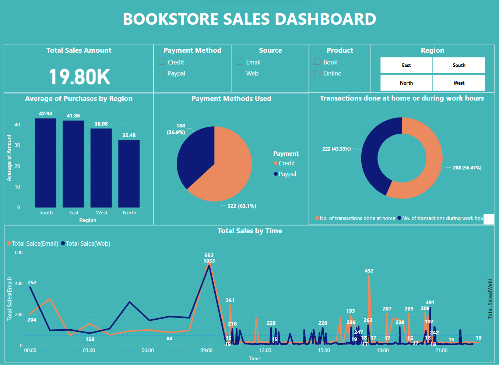

In response to a significant increase in sales at an offline bookstore, we embarked on the Offline Bookstore Sales Analysis project. The existing manual data management process using Excel became cumbersome as the data grew. Our objective was to provide a solution that would enable efficient data analysis and visualization. By leveraging the power of Power BI, we transformed the bookstore's Excel database into an interactive dashboard that showcased key insights and facilitated informed decision-making.
To address the data management challenges, we first assessed the existing Excel database and recognized the need for a more scalable and user-friendly solution. We carefully transformed the database, ensuring data integrity and accuracy. By cleaning the data, we eliminated inconsistencies and errors, preparing a solid foundation for analysis.

The resulting Power BI dashboard empowered the store owner with an intuitive and interactive interface for exploring and understanding sales data. The dashboard offered multiple features and visualizations that provided valuable insights.
By utilizing checkboxes, the store owner could compare sales generated from different payment methods (Credit and Paypal). This feature enabled a quick understanding of customer preferences and the effectiveness of various payment options.
Another set of checkboxes allowed the store owner to analyze sales based on the source of the purchase, whether it was from the store's website or through email campaigns. This feature helped evaluate the impact of different sales channels and marketing strategies.
Multiple select buttons facilitated a region-specific analysis, enabling the store owner to focus on specific areas (North, West, East, South). This feature offered insights into sales patterns and average purchase amounts in different regions, supporting targeted marketing efforts.
The Offline Bookstore Sales Analysis project successfully transformed the bookstore's Excel database into an interactive Power BI dashboard. By leveraging the dashboard's features, the store owner gained valuable insights into sales performance, customer preferences, and regional trends. This data-driven approach allowed for informed decision-making and the optimization of marketing strategies. The user-friendly nature of the dashboard streamlined data analysis and facilitated ongoing monitoring of sales data.
For more technical details about my project, feel free to check out my Github repository.
Your feedback matters a lot!